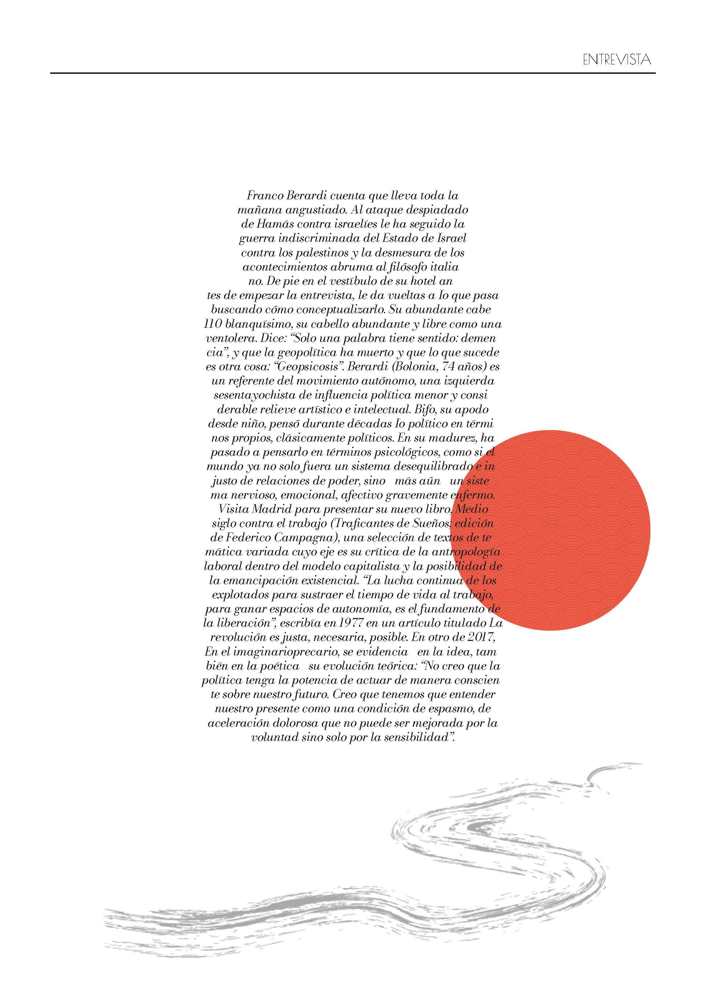

IMAGEN
LILAC WINE
La sugestión de las imagenes
Cartel de Lilac Wine de Nina Simone. Cuando el amor y la embriaguez se parecen demasiado. Técnica de error fragante para conseguir pregnancia visual.

IMAGEN
EL MAGO
Recursos persuasivos de la imagen
Utilizando la figura retorica de la metáfora, represento la carta numero 1 de los arcanos mayores del Tarot. Una gorra, unos guantes y un bola de cristal hacen el mago.

IMAGEN
The House Of Bronce
El lenguaje bi-media
Unos pictogramas que representan una realidad no convencional.

TEORÍA E HISTORIA DEL DISEÑO GRÁFICO
Especial IKEA
Lázló Moholy-Nas y Marianne Brandt
Como Lázló Moholy-Nas y Marianne Brandt llegan hasta nuestros días con sus formas y colores.

RECURSOS EDITORIALES
Rediseño el Pais semanal
Entrevista a Franco Berardi
Trabajo grupal de rediseño del Pais Semanal. Siguiendo el hilo conductor que le asignamos para rediseñar la revista, rediseño la entrevista a Franco Berardi dandole un alma oriental.

TIPOGRAFÍA
Creación de una tipografía
THE RAW PROJECT
Creación de una tipografía utilizando la técnica del bitmap